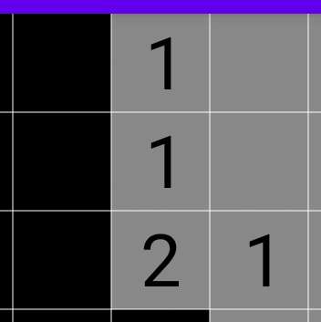

This is a project assignment for the Mobile Development module.
The application was made by Mathieu GUÉRIN (3026954).
Open-source repository: github.com/matiboux/griffith-android-minesweeper (public since after the deadline: April 13, 2020).
Play Store page: MineSweeper.
The application is a minesweeper game with a 10×10 game board.
The user interface shows a game board, which can be interacted with by touch, information about the ongoing game and three buttons:
Uncover Mode and Marking Mode, which will define the behavior of interactions with the game board.As a bonus, an AI was implemented in the application to play on its own.
When enabled, it will try to figure out a move to make and make one twice every second. If the AI does not know what to do, it will make a random move. Eventually it will lose on a random move, or win the game.
The strength of the AI is that it is capable of looking at one uncovered cell and compare its situation with its uncovered neighbor cells.
For example:

The AI scans uncovered cells from left to right and top to bottom.
In the situation above, the AI would start by looking at the top and would not be able to decide on making a move.
Then, it would look at the next uncovered cell, the second and find that it doesn’t show any obvious move to make. However, when comparing its covered cells to those of its neighbors, the AI will find that the covered cell on the left of cannot be a mine because of an implication from the top .
Therefore, the AI will uncover the covered cell on the left of on this move.